Catch duplicate orders, products reordered too often and deliveries to sensitive destinations at the moment a purchase order is confirmed. Warn the buyer, or block the order until a supervisor bypasses or rejects it with a recorded justification.
Standard Odoo checks who you buy from and how much an order costs, but not whether the same order was just placed.
Four steps, all inside the standard purchase flow.
Screenshots use Odoo 19 demo data plus office and safety supplies ordered from three Saudi vendors, with a monitored Jeddah Branch warehouse.
Settings under Purchase › Configuration › Settings › Advanced Order Warnings. Supervisors get Purchase › Orders › Blocked Orders and Purchase › Orders › Order Warnings Log. The RFQ and purchase order lists gain a Warning Review column and, in the search panel, the filters Blocked by Warnings, Warnings Bypassed and Rejected by Supervisor, and a Warning Review group-by.
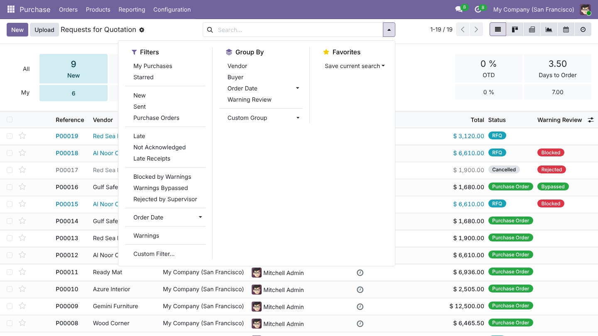
Tick Advanced Purchase Order Warnings (off by default, set per company), then enable Order Duplicate Check, Item Reorder Frequency Check and Destination Check. Each rule has its Vendors scope (Same vendor, Different vendors, Any vendor), a period in days and an Enforcement mode. Review Activity Users picks who is notified; leave it empty to notify every supervisor of the company.
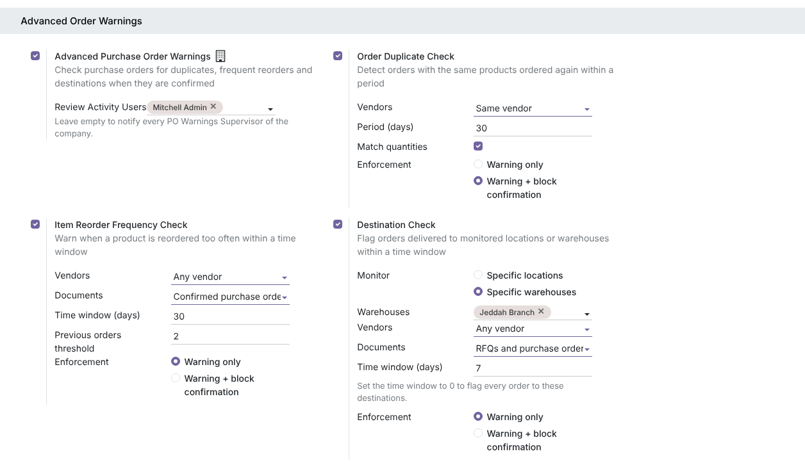
On draft RFQs a banner lists what confirmation will trigger, updated as lines change – even before the order is saved. Yellow means it will confirm with warnings; red means it will be blocked. Related orders are clickable.
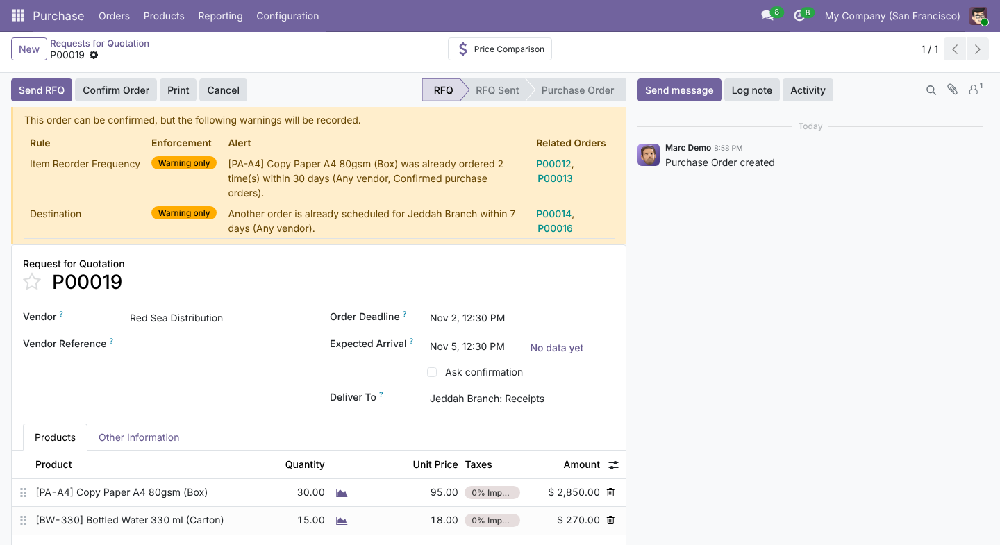
When a rule set to Warning + block confirmation matches, the order stays an RFQ, gets a Blocked ribbon and a red banner, and the buyer sees a Confirmation blocked notification. The Order Warnings tab keeps every alert with its rule, enforcement, product and related orders.
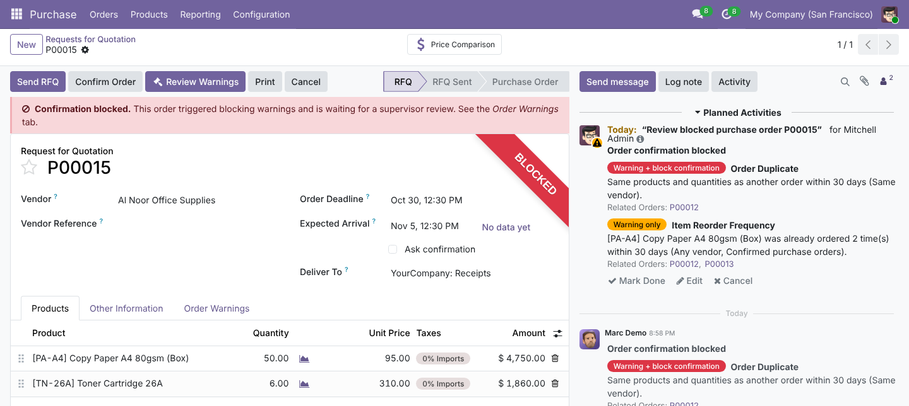
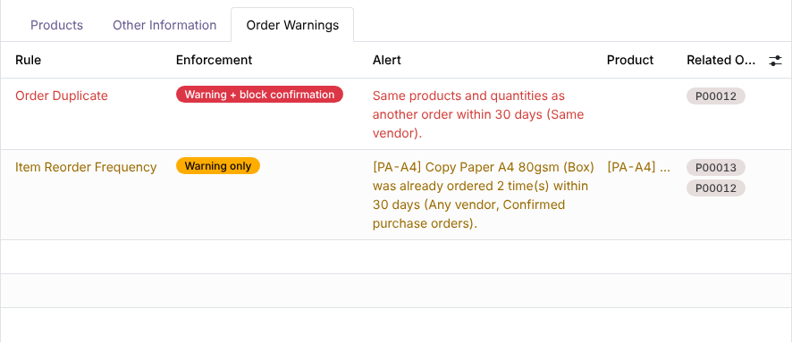
Each blocked attempt posts an Order confirmation blocked note listing every alert – laid out to fit Odoo 19’s side chatter – and schedules a PO Warning Review activity for each reviewer. Repeated confirmation attempts do not create duplicate activities. Orders confirmed with warnings get a Confirmed with warnings note instead.
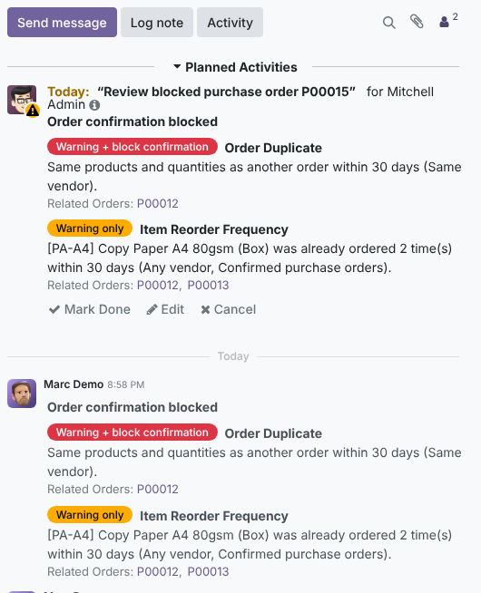
Review Warnings opens the alerts and a mandatory Justification. Bypass & Confirm confirms the order right away (standard double validation still applies), closes the activities and stores the decision under Supervisor Review: who, when and why.
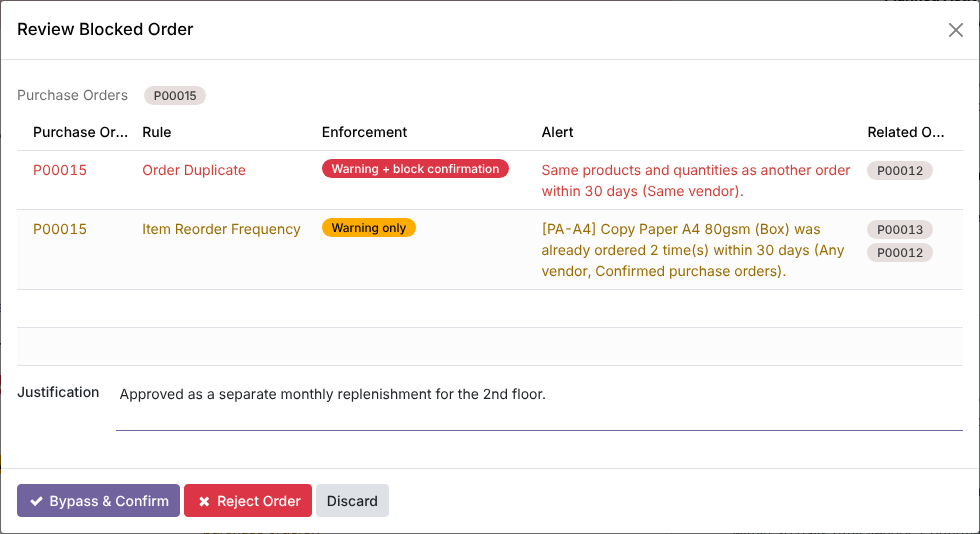
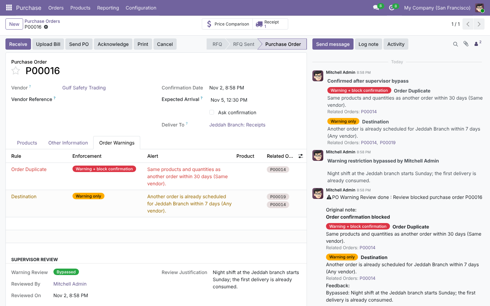
Reject Order cancels the RFQ, shows a Rejected ribbon, records the justification and notifies the buyer in the chatter. Setting it back to draft clears the decision, so a new confirmation goes through the checks again.
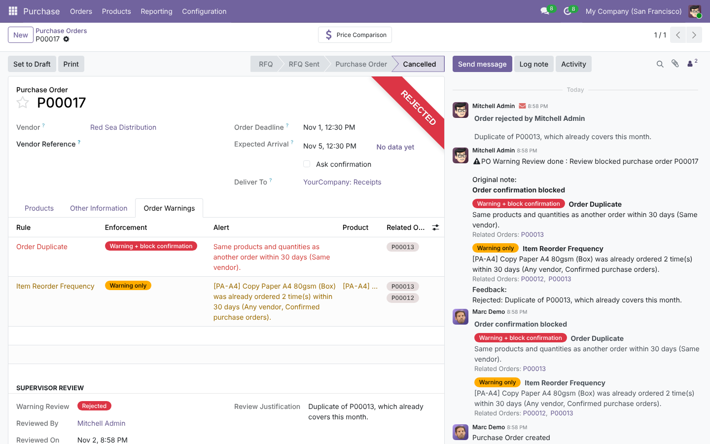
Purchase › Orders › Blocked Orders lists every order waiting for review, with its buyer, amount and pending activity.
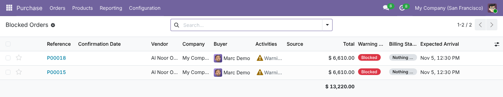
Every alert raised at confirmation is kept: order, vendor, rule, enforcement, related orders and the current review state. Filter on Blocking, Warning Only or Pending Review, and group by Rule, Enforcement or Purchase Order. Records are read-only, and each alert stays in the language of the user who confirmed the order – the last two rows were confirmed by an Arabic-speaking user.
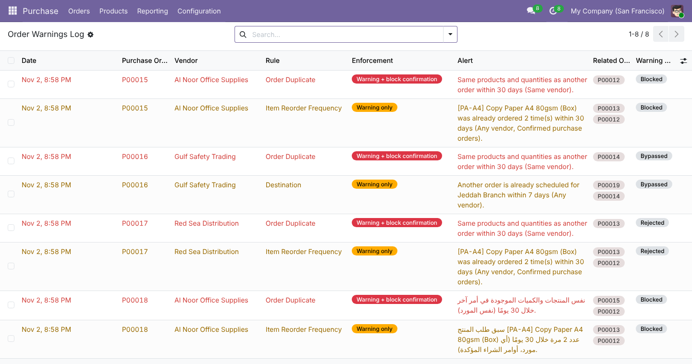
All 151 terms ship in ar_001: settings, banners, alerts, chatter notes, activities and errors. Styles use logical (start/end) properties only, so Odoo’s RTL layout mirrors cleanly. Alerts are written in the language of the user who confirms the order.
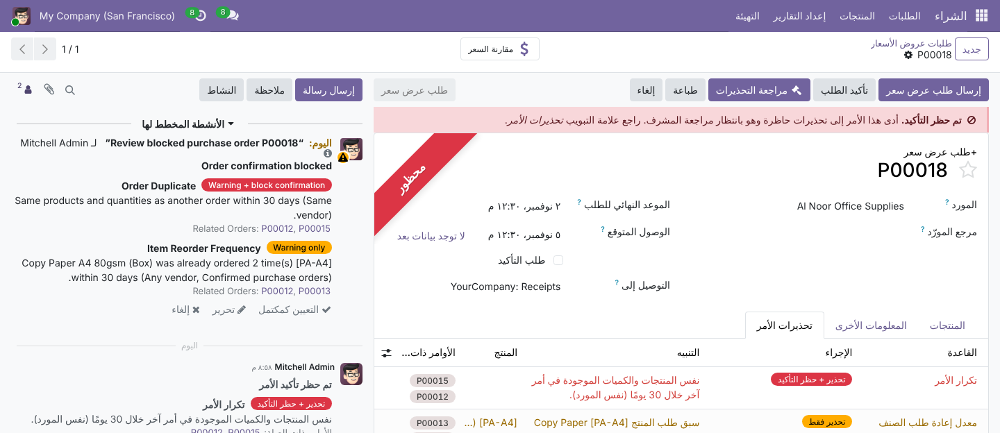
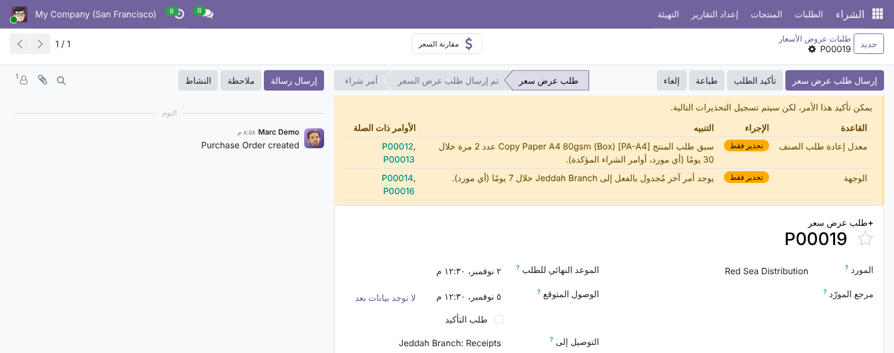
Periods count N days before and after the order date. Vendors are compared by company, so a vendor’s contacts count as the vendor.
| Rule | Matches when | Orders compared |
|---|---|---|
| Order Duplicate | Same set of products (and quantities, if Match quantities) on another order within the period | All RFQs and orders, cancelled excluded |
| Item Reorder Frequency | The product is on at least Previous orders threshold other orders within the window – one alert per product | Confirmed purchase orders (incl. To Approve) or RFQs and purchase orders |
| Destination | Another order goes to the same monitored warehouse or location within the window; window 0 flags every order there | Same choice as above |
Each of these is covered by an automated test.
A new group, Purchase Order Warnings / Supervisor, set on the user form in the Supply Chain section. It includes Purchase / User, and Administrator is a member by default.
| Who | Sees and does |
|---|---|
| Purchase / User | Preview banner, Order Warnings tab and chatter alerts (read-only). Cannot bypass, reject or change review fields. |
| Purchase Order Warnings / Supervisor | Review Warnings, Bypass & Confirm, Reject Order, the Blocked Orders and Order Warnings Log menus, review activities. |
| Purchase / Administrator | The Advanced Order Warnings settings. |
| Review fields | Cannot be written directly through the interface or the API, not even by supervisors – only through the review dialog. |
| Multi-company | Record rule limits warnings to the user’s allowed companies. |
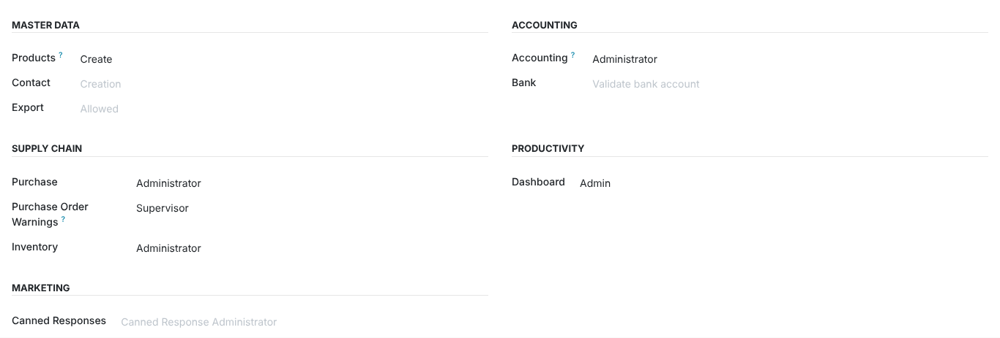
| Odoo version | 19.0, Community and Enterprise |
| Depends on | purchase_stock |
| Python dependency | None |
| Menus | Purchase › Orders › Blocked Orders · Purchase › Orders › Order Warnings Log |
| Settings | Purchase › Configuration › Settings › Advanced Order Warnings (per company) |
| Models | New: purchase.order.warning, po.warning.review.wizard. Extended: purchase.order, res.company, res.config.settings. Activity type PO Warning Review. |
| Automated tests | 65: settings and constraints, every vendor / document / period permutation of the three rules, UoM and split lines, block, bypass, reject, auto-release, batch confirmation, double validation, security, multi-company, query count, chatter layout and Arabic rendering |
| Translations | Arabic (ar_001), 151 of 151 terms |
| License | LGPL-3 |
Questions, a demo, or an adaptation to your own process? Get in touch.
✉ ibrahim.yahiah@gmail.com LinkedIn: Ibrahim YahiaAuthor: Ibrahim Yahia · License: LGPL-3